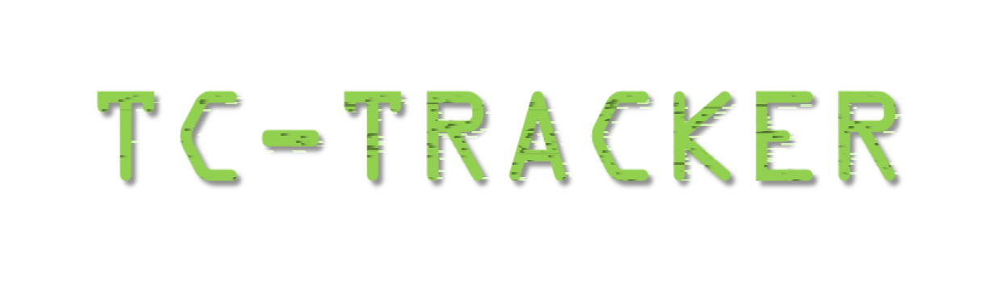

<DOCTYPE HTML>
<html>
	<head>
		<title>TC-Tracker/学習と挑戦のためのSNS</title>
		<meta charset="UTF-8">
		<meta name="viewport" content="width=device-width, initial-scale=1.0">
		<link rel="stylesheet" href="style.css">
		<link rel="icon" href="favicon.ico">
	</head>
	<body>
		<header>
			
		</header>
		<h3>TC-Trackerは<a href="https://misskey.io/@Meronpan@misskey.io">エンジニアのMeronpan</a>が開発予定のwebサイトで動作する「やるべきこと/挑戦していること」を公開しモチベーションを高めるSNSです。</h3>
		<footer>
  		<ul>
    		<li><a href="">TOP</a></li>
    		<li><a href="./dev.html">現在の開発状況</a></li>
    		<li><a href="">About</a></li>
    		<li><a href="">Contact Me</a></li>
  		</ul>
  		<small>© meronpan ALL RIGHTS RESERVED.</small>
		</footer>
	</body>
</html>
